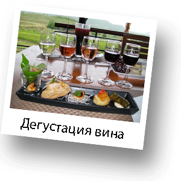
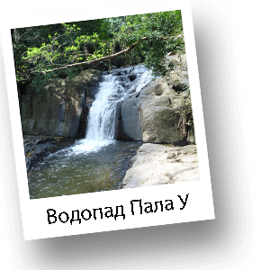
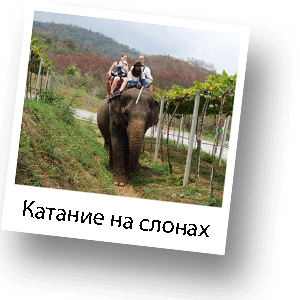

Экскурсия на Виноградники и Водопады Пала-У

Удивительная по своей красоте экскурсия, которая позволит Вам получить массу положительных ощущений от близкого знакомства с природой Таиланда. Ваше путешествие начнется с посещения национального парка-заповедника Каенг Крачан в 70 км от Хуа Хина на запад. Каенг Крачан является самым большим по площади заповедником на территории Таиланда. В заповеднике обитает множество диких животных Юго-Восточной Азии. Возможно, пока Вы направляетесь к Водопадам Пала-У, которые расположены в южной части заповедника, Вы сможете увидеть диких слонов, обезьян, варанов и других представителей фауны. Добравшись до конечной точки маршрута, Вы отправитесь пешком по джунглям к водопадам. Во время прогулки по джунглям Вас ожидает масса положительных эмоций.

Вы увидите множество бабочек самых неверояных расцветок и разнообразных форм. Бабочки Вас будут окружать всю прогулку по джунглям. Вы совершите подъем к водопаду, который скорее похож на горную речку с небольшими каменными порогами, с которых спускается водопад. Вы покормите карпов, которые кишат в водопаде. Карпы не имеют зубов, у Вас будет возможность поиграть с рыбой и искупаться в водопаде. Прогулка оставит очень приятные воспоминания. Далее Вы отправитесь на винодельню, которая расположена в долине среди гор. Виноделие в Таиланде – достаточно молодая отрасль. Около 15 лет на территории Таиланда опровергли мнение, что виноград невозможно выращивать на широте и долготе, где находится Королевство.

На сегодняшний день Таиланд является единственной страной Юго-Восточной Азии, где виноград выращивают и производят вино. Отрасль виноделия стремительно развивается. Виноградники, которые Вы посетите являются самыми молодыми виноградниками на территории Таиланда, но самыми лучшими и перспективными. Именно на эту винодельню, которая называется Hua Hin Hills, делаются очень большие ставки. Качество вин, которое производится на винодельне необычайно высоко и оценено профессионалами по всему миру, что подтверждается наградами и медалями. Во время визита на виноградники у Вас будет возможность узнать много интересного о производстве вина, попробовать виноград с лозы. Также Вас ожидает потешествие верхом на слоне вдоль виноградных плантаций. Вы увидите, как растет знаменитый джек фрукт, папайа, лаймы, манго и, даже сможете увидеть, совсем недавно посаженную оливковую рощу. После этого Вас ожидает великолепный обед на веранде ресторана с дегустацие разных сортов вина. С веранды открывается захватывающий вид на плантации и горы, Вы насладитесь обедом и сможете поделиться своими впечатлениями.
Рекомендации по одежде:
Удобная одежда, спортивная обувь, полотенце, купальные принадлежности, запасной комплект одежды.

1200 Бат
Выезд - 9:00
1400 Бат
Возвращение - 16:00
1800 Бат
*Стоимость указана за человека
**Дети до 3 лет - бесплатно, без предоставления отдельного места в транспорте
***Дети от 3 до 10 лет - 900 Бат
Маршрут:
Водопады Пала У, Прогулка по джунглям, Катание на слонах, Дегустация вина, Обед на виноградниках.
В стоимость включено:
Трансфер, информация о посещаемых объектах на русском языке, русскоязычная горячая линия на протяжении экскурсионной программы.
Дополнительные расходы:
Личные расходы, все входные билеты, чаевые, катание на слонах, корм для слонов, корм для рыб, дегустация вина, питание.